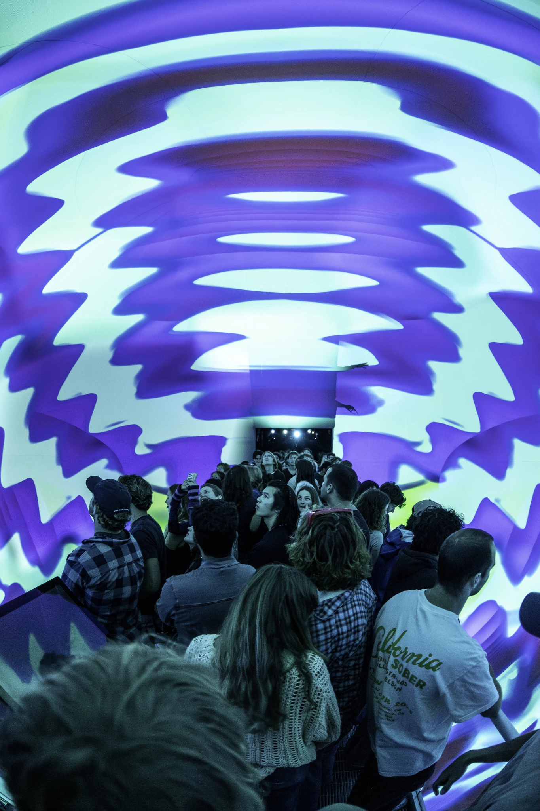
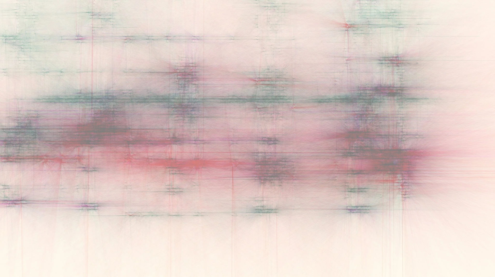
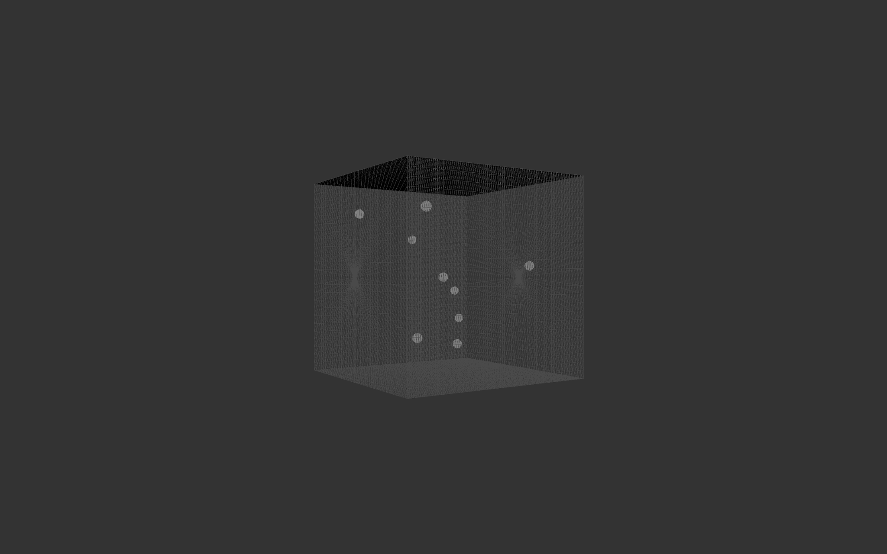

Spatial Root
A C++ spatial audio engine for real-time and offline playback of Atmos/ADM-based immersive audio on arbitrary multichannel loudspeaker layouts.
Software
Currently developing secure, on-device speech systems at Qualcomm; previously built spatial audio and immersive graphics infrastructure with the AlloSphere Research Group.
01
CULT DSP is an open-source spatial audio ecosystem designed to make immersive media more portable across formats, software environments, and loudspeaker systems. Its interconnected tools support the full workflow from transcoding and scene representation to authoring, integration, and playback. The toolchain and its applications have been presented at the Linux Audio Conference and the Audio Engineering Society’s immersive audio conference.
A C++ spatial audio engine for real-time and offline playback of Atmos/ADM-based immersive audio on arbitrary multichannel loudspeaker layouts.
A lightweight JSON scene format for representing moving audio objects, speaker beds, LFE content, and time-varying metadata across spatial-media applications.
A C++ tool that converts Atmos/ADM and BW64 audio into LUSID scenes and can author LUSID packages back into ADM-compatible audio files.
An early-development procedural authoring system that uses music information retrieval to generate object placement and movement for immersive audio scenes.
A collection of experimental hosts and integrations that demonstrate the CULT DSP toolchain across AlloLib, Unreal Engine, web, and networked spatial-media workflows.
02
A performance toolkit combining real-time object-based audio spatialization, audio-reactive graphics, and streamlined asset importing for live music in the AlloSphere. Presented at AES 2025.

A Python system that clusters an audio corpus and uses time-windowed support vector regression to predict and resynthesize new material.

A Python and Processing tool that converts FFT analysis of audio files into automatically generated abstract graphic musical scores.
A Max/MSP experiment that maps visual image data to synthesizer and granular-processing parameters to generate sound.
A Max/MSP and Jitter prototype that uses iterative trajectories and vector-based amplitude panning to move sound objects through a cubic space.

A generative SuperCollider radio that transforms live Surfline data, accessed through Python, into endlessly varying ambient music.
04